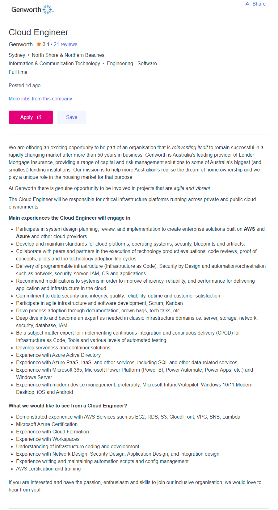

Tonkotsu Ramen
Mr. Robot
League of Legends
Samurai Champloo
You can summarize me with four things: Tonkotsu Ramen, Mr. Robot (tv show), League of Legends and Samurai Champloo (anime). I have completed a Diploma of IT Networking and various vendor certificates. My parents are both from Spain but I was born in Australia. I speak English and can (mostly) understand Spanish being spoken to me. I love food, too much for my own good! Always down for a Ramen!
I am passionate about IT and my interest in which field has varied as time goes on. For the most part, the following fields have secured a special interest for me:
• Security (offensive and defensive) • Cloud services • Networking • Programming/Software
My interest started when I was quite young, being introduced to different technologies because of my 8-year older brother getting them as gifts or for his schooling. First there were gaming consoles (Sega, Super Nintendo, Gameboy) and then came a computer and the Internet. I was obsessed, and my brother gave me a strong head start by teaching me what he knew and what he was learning at school. If I wasn’t on the computer, I was usually behind my brother watching what he was doing on it.
Since then, I have been the reliable family go-to for any Internet or IT related support or recommendations. I didn’t jump straight into a career in IT, but rather in fitness and gym management. However, during my time in the fitness industry, I found myself working with business owners developing business intelligence reporting tools, assisting with company-wide IT solutions and again being a go-to in WA for IT related assistance.
I chose to study at RMIT as I was interested in the information about this IT course as well as the employability ranking of RMIT graduates. I ended up studying through Open Universities as it was the only way to complete the course 100% online, and I work full time in Western Australia. I believe my time at RMIT studying this course will be valuable for my career.
I expect to learn industry standards and best practices of IT and be exposed to more technologies than what I am currently being exposed to at my job. I am looking forward to learning more about programming, databases and excited to go deep into studying cloud technologies. The unit outline is of this course is exciting!
Cloud Engineer Job in Sydney - SEEK
The position is looking for a Cloud Engineer who wants to be part of an organization that is growing their presence in the cloud. Somebody who is both knowledgeable of existing, on premises systems but also strong with cloud products, services, and frameworks.
The role appeals to me because the description of the role shows an organization who is looking to make cutting edge implementations to their business with platforms, I am both familiar with and enjoy using (currently at a basic level). What they are looking for is exactly what I would like to see myself doing in the future.
Vendor certifications with Azure and AWS, as well as experience using the platform and its features are the main requirements of this position. Programming both ties in with these certifications, as well as being a requirement for the coding, development, and automation aspects.
I currently have basic experience with cloud platforms including Azure and AWS, and some of the basic vendor certificates. I would need to level up my knowledge and understanding of these platforms and accompany it with higher level vendor certificates (e.g., Microsoft Certified Azure Administrator). I also have moderate experience with network design but need to further my knowledge of security and application design.
For the cloud experiences and skills, creating test environments with cheap VMs on the cloud platforms, following labs and achieving desirable project goals. To keep costs of doing this low, I will develop deployment scripts which can quickly create and destroy cloud lab environments as needed. This should also help me gain the experience I need to study and pass the vendor certificates. I also see great value in the Bachelor of IT with units that will assist in the requirements, and give my resume a healthy boost.
I find the results of the tests quite interesting, but maybe not completely accurate for me. There are inconsistencies between the results of the MBTI and the Big Five Personality test. To ensure I had done these tests as accurately as possible, I repeated both on different days and had very similar results, with the same ‘personality’ result.
I can relate to the MBTI showing higher introversion, but the Big Five shows higher Extraversion. This could be to do with the different questions and how I interpret them. Also, the ISFP personality type is supposedly quite artistic, but I have never thought of myself as such. Other than these differences, I find a lot of similarity in my life to this personality type. I completely agree with my learning style being primarily tactile and visual, as I much prefer to see and do what I am learning.
The results explain that I work well in teams where each member is loyal and considered equal. A team which is willing to collaborate and put their individual effort, no matter what that may be. I agree with this, as I don’t expect the world from my peers, just a genuine effort to get the job done well. I am a sucker for keeping everybody happy, and I think this helps a team stay strong.
When forming a team, I will be open to anybody who shows that they are keen to see the work through, and ideally somebody who has had presence in the course. The weekly discussions were the first place I looked to see who was active and still needed a team.
My project idea is to develop a notification system that is capable of both email and/or texting users when their password is due to expire. This will greatly benefit users who meet the specific following criteria:
The system will be able to do more than notifications, such as reporting, logging, and identifying if a user account which is about to have a password expire is in use. It is designed to be a light software package that integrates with servers hosting the Active Directory Domain services role.
Over the last couple of years working in the service desk at a managed service provider, I have noticed a trend issue which has been difficult to mitigate – password expirations with no notification. This lack of notification comes from the specific scenario mentioned in the above dot points, causing business disruption, inefficiencies, and unhappy clients. At the time of writing this, there is no native solution provided by Microsoft, despite being a somewhat prevalent issue online and a well-known issue in the organization I work in. This appears to be a niche gap in the market with an opportunity for IT teams who rely on an on-premises Active Directory to maintain the standards of centralized identity management. This will also improve user self-service and reduce time required for administrators needing to manually assist.
The notification system will use a service account tied to an on-premises Active Directory which has sufficient permissions to query information needed to determine how long it will be when a user’s password is due to expire. The service account will use a PowerShell script to obtain the information required. Then it will authenticate to an SMTP service for notifying via email to the user, administrator, or anybody who the client wishes to be notified of an upcoming password expiration.
If a text notification is desired, the SMTP service can email specific parameters pulled from a PowerShell script connected to the Active Directory to a listening server which sends the text notifications. The email and text notifications can be adjusted as required to daily, weekly, or monthly notifications.
The notification system can be configured to periodically report to administrators the current upcoming password expirations and who its for. As it is pulling information from an Active Directory, other helpful information can accompany the usernames in the report, such as the user’s real name and a medium of contact (email address, extension, or mobile number).
The notification system can automatically create service/incident tickets with the IT service desk upon expiration, or within configured time parameters set by the administrator. An example being when a user has run out of time to reset their password via self-service, the automation will proactively allow the IT service desk to reach out when expiration is known from a generated ticket or email.
As it is a light software package, installation is simple and only requires a user with administrative privilege to run the installer. Once installed, basic configuration of adding the required domain service account, and use of either an in-house or provided SMTP service is all that is needed for email notifications. Text notifications would require either a subscription or account balance which is reflected on the volume of texts sent.
Error messages for when the software fails is to be designed with clear messaging accompanies by an identifiable error code. Most issues can be quickly resolved with an inbuilt troubleshoot tool, which prompts what configuration needs attention.
Organizations looking to reduce time spent on basic tasks which could be automated are the target audience for this project, whether that be a Managed Services Provider, or an inhouse IT shop.
If this notification system is easy to use and transparent with information handling, organizations can safely reduce user down-time resulting from known and expected issues that usually end up with calls to the service desk. Depending on the IT support team or SLA agreement with a service provider, this issue unsolved can prevent users from authenticating themselves to systems and communication mediums for hours or worse, days.
These problems of inefficiencies can be strongly mitigated and proactively actioned which ultimately results in financial loss prevention caused by idle employees. It also reduces the time required by IT administrators and support engineers needing to respond, resulting in more financial loss prevention.